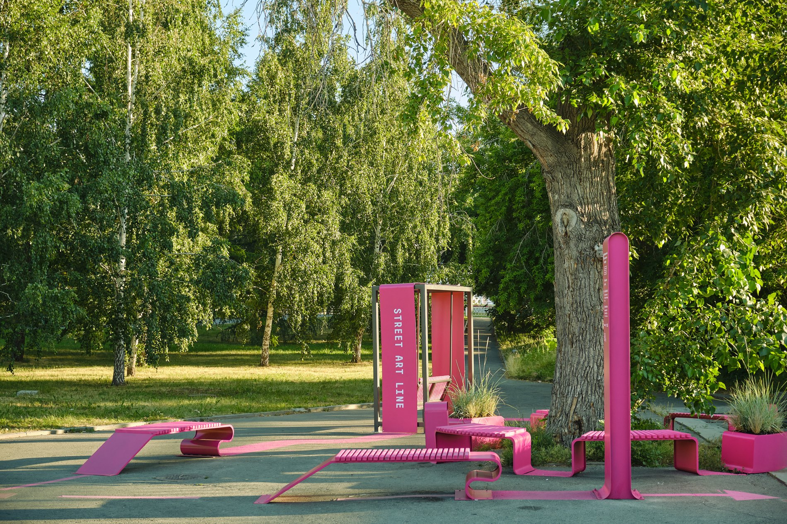

Yandex Maps
Made maps feel like local discovery.
The task was to move beyond utility and show Yandex Maps as a local-discovery expert: a product for finding places, routes, scenarios and city behavior.
Context
Yandex Maps already had utility: routes, traffic, places and navigation. The marketing challenge was to make the product feel like a city-discovery companion, not only a functional map opened when a user already knew where to go.
One underused behavior was especially important: search by concrete need, not only broad categories. Instead of searching only "coffee shops", "food" or "pharmacy", users could search "flat white", "pizza", "bandage" and other product-level needs.
Work
- Won the tender as strategic planner and helped set the long-running communication direction.
- Built and evolved the communication / social strategy over 3-4 years.
- Created a 12-month communication strategy for advanced-search scenarios.
- Positioned Yandex Maps as a local-discovery expert rather than a purely functional map.
- Translated product features into everyday city situations: what people want, where they are, and how the product helps them decide faster.
- Helped turn city activations into product proof: routes, cultural projects and public-space moments people could actually experience through the map.
Results
Before promotion, the function had roughly 30K monthly users according to client-side context. After promotion, the client reported that MAU for the function exceeded 5M. The exact internal data was not disclosed by the client, so this case cites the client-provided outcome.
Product behaviorSearch shifted from category-level discovery to concrete product needs.
AdoptionFunction grew from roughly 30K monthly users to 5M+ MAU, per client data.
Platform3-4 year communication / social strategy.
Category depthMaps framed as local discovery, not only utility.

City activation
Turned the city into a walkable street-art gallery.
In collaboration with a local street-art festival, the project created a Street Art Line: a route that connected the festival works in the city and could also be followed inside Yandex Maps.
Where the route crossed empty or underused areas, it became more than a line on a map: small urban forms, benches, swings, planters and micro public spaces turned navigation into a real city experience.
Exact figures are confidential, but after the project the client reported a shift in brand loyalty in that city: Yandex Maps overtook the competitor and strengthened switching toward the app.